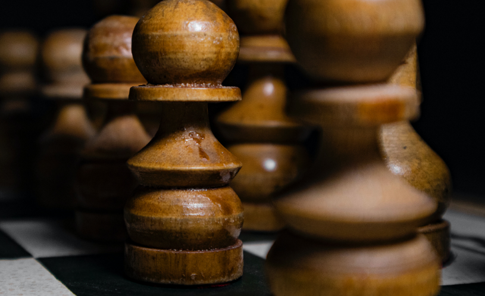

O tabuleiro de Xadrez possui 64 casas distribuídas em 8 fileiras (horizontais) e 8 colunas (verticais), sendo que as colunas é designada por uma letra (A a H) enquanto as fileiras de um número (1 a 8), portanto pela letra e pelo número podemos identificar as jogadas.
O peão é a peça com menos valor, mas ela pode ser promovida a qualquer peça do xadrez se chegar na última fileira, exceto o rei. No início cada jogador possui 8 peões começando sempre na segunda fileira caso esteja jogando de brancas e de negras se inicia na sétima.
O bispo é uma peça intrigante, pois tem total liberdade no tabuleiro, mas sempre se movendo nas diagonais, está localizada ao lado do cavalo nas casas (f1) para o bispo de casas brancas e (c1) para o bispo de casas escuras. Para as Negras está localizada na casa de (c8) para o bispo de casas claras e em (f8) o bispo de casas escuras.
A dama é a peça mais forte do xadrez sendo utilizada com extremamente frequência nas partidas, tem um ataque poderoso e efetivo para os seus oponentes se movimentando para qualquer posição quantas casas necessárias. Cada jogador possui uma dama localizada nas casas de (D1) para as brancas e em (D8) para as negras.